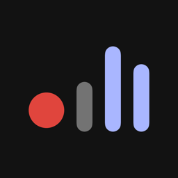
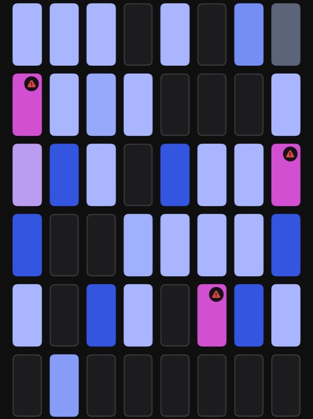
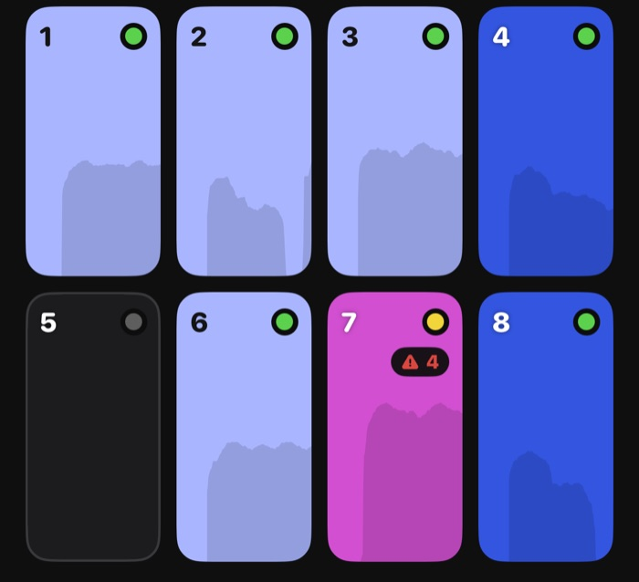
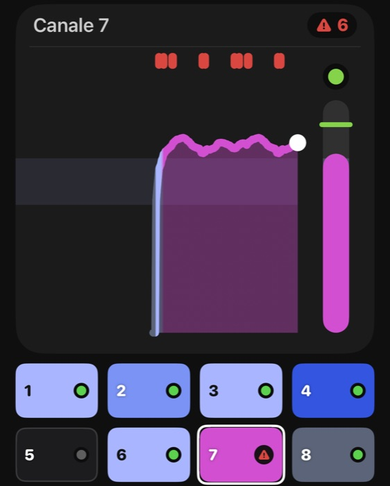
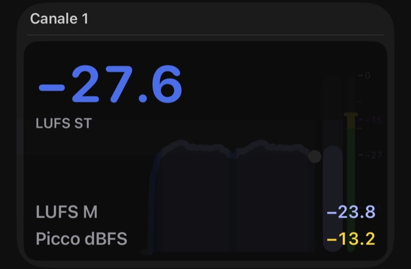

suns
Un registratore audio multitraccia per iPhone, iPad e Mac.
Colleghi una scheda audio o un mixer con porta USB e premi Registra.
Ogni canale finisce nel suo file.
Per collegarti ti basta procurarti l'adattatore o il cavo USB adatto. Nessun hardware particolare richiesto.
[ beta in arrivo ]
01l'idea di base
Per capire a cosa serve, immagina due persone diverse.
il podcaster
Con il telefono, una scheda audio e due microfoni, tutto in mobilità e senza allacciarti alla corrente. Colleghi, premi Registra e porti a casa l'intervista.
Durante la registrazione tieni d'occhio i volumi, prendi le note e metti dei marker nei punti importanti.
Quando finisci, i file sono già lì, sul telefono: una traccia a testa, pronte da montare, con tutte le tue note.
il fonico
Stai facendo un concerto: un mixer con tanti canali, un computer. Colleghi il mixer al Mac, fai il routing sul mixer e ogni canale va su una traccia sua, mentre controlli con un colpo d'occhio che niente "clippi".
Il mix lo fai il giorno dopo, partendo dalle tracce separate.
Ma non sono due app. È sempre la stessa suns, e tutto si può incrociare: 48 canali di un mixer
su un telefono, oppure il tuo Mac usato per un solo microfono USB.
I limiti sono la fantasia e le tue necessità.
02come si legge, cosa si vede
Con i colori. Mentre registri ci sono due cose da guardare, sempre, e basta quelle.
CLIP: non è andato fuori scala?
Se il suono è più forte di quello che la scheda riesce a rappresentare, si dice che clippa: la parte in più è persa e non si recupera in nessun modo. Se succede, il triangolo di allerta diventa rosso e conta quante volte è successo: se lo vedi mentre registri, abbassi.
LOUDNESS: il volume è abbastanza?
Il colore del canale ti dice quanto suona forte, più o meno come lo sente l'orecchio: dal blu (piano) al magenta (forte). Quanto debba essere forte lo decidi tu, e infatti puoi anche fissare un livello preciso da raggiungere.

03più spazio hai, più vedi
suns è fatto per farti vedere sempre tutti i canali che registri, così non rischi di non accorgerti di un problema.
Le informazioni sono sempre le stesse. Ma, a seconda dello spazio sullo schermo, ogni canale cresce e ti racconta di più:



04ok, bello, ma voglio saperne di più
il picco e il clip
Il picco (in dBFS) è il valore massimo raggiunto dal segnale audio. Come nei mixer, si usano tre colori (verde, giallo, rosso) per aiutarti a visualizzare il valore. Nell'app puoi scegliere la scala su cui sei abituato a lavorare.
Il clip invece non si discute: è quando il segnale tocca 0 dBFS, e il segnale è rovinato.
Il triangolo da grigio diventa rosso, con il numero di eventi (un tocco lo azzera).
la loudness e i colori: continua o target
La loudness (in LUFS) dice quanto forte suona un canale, in modo più vicino a come lo sente l'orecchio umano.
Quando registri non esiste un valore magico da raggiungere: dipende da cosa fai, e una voce in studio non è un concerto dal mixer. Quindi di partenza il colore non ti dice "bene" o "male".
Modo Continua (di partenza): dal blu (piano) al magenta (forte), in un'unica sfumatura; distingue il silenzio dal rumore di fondo.
Se invece hai un obiettivo preciso, passa al modo Target: scegli una fascia di volume, oppure lascia che suns la tari sulla tua voce in 10 secondi, e il colore ti dice se la stai seguendo.
Blu sotto il target, lilla dentro, magenta sopra. Usa i preset che trovi nell'app o crea la tua fascia.
voglio tutte le informazioni possibili
Al grafico e alle mattonelle puoi sovrapporre i numeri, a seconda dello spazio disponibile: la loudness a breve termine (LUFS ST) in grande, sotto la loudness momentanea (LUFS M) e il picco in dBFS.
Con la vista Fonico, inoltre, il LED è sostituito da un meter di picco vero e proprio, e puoi aggiungere la scala graduata.
05parentesi tecnica: solo per appassionati di misure
Per chi vuole sapere con che metro misuriamo. Se non ti interessa, puoi saltare tutto.
la loudness
Misurata con lo standard ITU-R BS.1770, con il filtro K che pesa le frequenze come le sente l'orecchio. "M" è la misura su una finestra di 400 ms, "ST" su 3 s. L'unità è il LUFS.
il picco
Tre scale per il LED: Semplice (la nostra), EBU e SMPTE, quelle dei broadcaster. Il clip è sempre 0 dBFS, qualunque scala scegli.
i file
WAV, ALAC e AAC. Puoi scegliere fra la massima affidabilità del WAV, la codifica compressa ma senza perdite dell'ALAC e l'ottima compressione dell'AAC, per ridurre al minimo lo spazio occupato.
i canali
Da 1 a 48, da qualunque scheda o mixer USB class compliant (in pratica quelli che vanno senza driver, molto frequenti). Un'unica app per iPhone, iPad e Mac.
06e tante altre cose per facilitarti la vita
- Registra a schermo bloccato, e la vedi sulla schermata di blocco (su iPhone e iPad; il Mac resta sveglio da solo). Al 20 % e al 10 % di batteria ti avvisa.
- Prima di partire ti ricorda le cose che fermano una ripresa: modalità aereo con il Wi-Fi spento, sveglie, telefono in carica.
- Se una telefonata o una sveglia ferma la ripresa, chiude i file e riparte da sola in una nuova ripresa dello stesso progetto.
- Se il dispositivo fa fatica a scrivere, te lo dice prima che si perda qualcosa; se perde dei campioni, te lo dice subito.
- Marker e una scaletta da spuntare: ogni punto spuntato è un marker. Progetti e riascolto, anche dal nome del progetto.
- Niente account, niente cloud: è tutto sul tuo dispositivo (nell'app File su iPhone e iPad, in Musica › suns sul Mac).
il reparto esperimenti
In Impostazioni › Sperimentali c'è la roba ancora in prova. Usala pure e fammi sapere come va:
- Esportazione (da attivare con "Abilita esportazione"): un progetto o una ripresa in un file ZIP, in WAV, ALAC o AAC.
- Prova di carico: fa registrare una demo con tanti canali e ti dice se il dispositivo regge, quanto scalda e quanta batteria si mangia.
- Ripara le riprese interrotte: se l'app si chiude di colpo durante una ripresa in WAV, alla riapertura sistema i file.
07su cosa gira
- iPhone o iPad con iOS 27. Più vecchio? Per ora niente. Su iPhone sta in verticale, su iPad gira in tutte le direzioni.
- Mac con macOS 27: la stessa app, nativa sul Mac, con le schede audio del Mac.
- Schede e mixer USB class compliant. Provata con vari mixer e schede audio, oltre a quelle che proverai tu ;)
08beta in arrivo
suns è in beta: per ora la provano in pochi. Quando la beta si apre a più persone, il link per installarla con TestFlight comparirà qui.
Intanto, se hai domande o una scheda da provare: support@savut.eu.